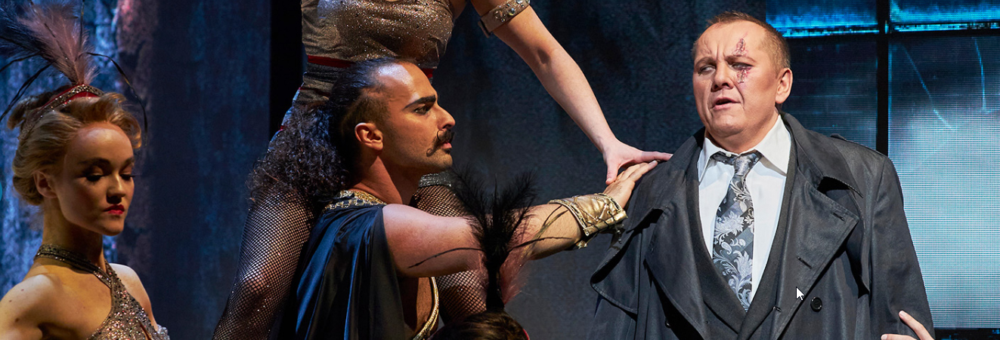
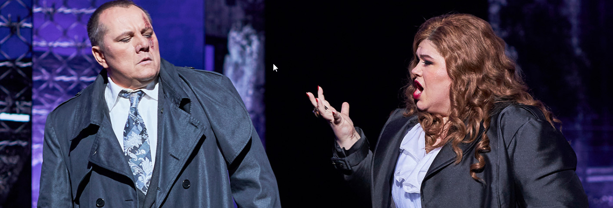

Press
Sydney Opera House
Il Trovatore|Conte Di Luna
Il Trovatore: an opera review by Murray Dahm
This new production of Verdi’s 1853 opera Il Trovatore directed by Davide Livermore had all the bells and whistles – the 14 LED digital panels supplemented with big, old-fashioned set pieces and a wonderful cast.
This production is updated to be set in the Spanish Civil War (1936-1939) although some scenes seemed to be timeless (the concrete ruins, graffiti and tyres were newer than the 1930s). There was also a travelling circus to represent the followers of Manrico and the Conte di Luna was turned into a kind of mafia boss. This production rejected the use of the term Gypsy as offensive (although the word “zingara” was still sung) and, instead, used Romani in the programme and any time the word gypsy would usually appear. At times the lighting, designed by John Rayment) seemed to not be in the right place but this added to a murky feel and was mostly where it needed to be. The 14 LED panels were a mixed bag – at times, their tarot card-like names of the characters and scenarios (each of the four acts has a name) were a bit heavy-handed. With digital content designed by D-Wok and sets by Giò Forma, at other times, they were very effective, such as in the monochrome scenes of Leonora’s love for Manrico in her second aria “D’amor sull’ali rosee,” and, in the final dungeon scene, they made the cell which allowed the voices to ping out into the auditorium. For the most part, they depicted places, ruined landscapes and a ruined circus, which was fine, although the ends of scenes needed to be held in freeze-frame while the panels moved – this could have been coordinated better to avoid dead moments on stage. When the panels hid the arrival of characters for the next scene, they were most effective, the Conte di Luna appearing as if from nowhere suited his stalking character. The most effective of these reveals was of the chorus and actors (on stage) for the miserere in Act IV. Similarly, the revolve (actually a double revolve) was a mixed bag – I thought it made the voices sound in the wrong place during the famous chorus “Vedi le fosche” but at other times, it allowed singers to ‘travel’ while staying in the middle of the stage. The revolve was most effective in the Act II finale when the usually awkward transition from outside the convent to inside the convent was effectively handled. These two uses of the revolve also highlighted the surprise for the production – that the Romani and Manrico’s followers were circus performers. A group of remarkable actors took on the role of acrobats, strongmen and clowns. Two of these open the show (in place on the apron before the audience enters and they ‘come to life’ as the overture begins). In the Anvil chorus, I thought they pulled focus unnecessarily – encouraging the audience to applaud their feats while the famous chorus was happening (perhaps this was deliberate as the chorus is too well known and veers easily into cliché territory; this was not a cliched rendition). In the Act II finale, however, Manrico’s army of circus performers was fabulous as they invaded the stage, and the slow-motion combat full of acrobatic postures was very effective and, because they were circus entertainers, entirely fitting. The most effective moment of the circus performers, however, was saved for the last – the end of the opera (“Egli era tuo fratello! Sei vendicata, o madre”) is unexpected, visceral and refreshing.  Sian Sharp’s Inez was a fleshed-out human being – her weeping real and her concern for Leonora heartfelt. This made what can be a minor part, merely the handmaiden to Leonora, into a real, flesh-and-blood character. Likewise, Parkin’s Ferrando – a character who opens the show in a big, fiendish aria for the bass, which was sung tremendously, with assurance and accuracy, but who then sinks into a supporting role for the Conte; you can forget what a strong opening impression he made when he doesn’t even sing in the final act. From the first notes of the opera, Ferrando’s (and Parkin’s) “Allerta!”, opened the show confidently (I would have liked the superstitious chorus to be frightened by the sounding of the bell at the end of his ghoulish tale (followed by their forte tutti “Ah!”)). Similarly, the Old Romani (Nathan Lay – stepping in at the last minute for Luke Gabbedy), Messenger (Thomas Strong) and Ruiz (Iain Henderson) made the most of what there is of their roles. The chorus, both men’s and women’s, were terrific in multiple roles – thugs, circus performers, nurses. Their singing was nuanced and powerful – soft when called for (and often taking notice of markings (such as several sforzandos) igno#d89910 in some performances) and full of gusto when needed.
Which brings us to the four main principals. Several of the first entrances seemed to involve singing which was too muscular, ‘ommphing’ their voices into the right place rather than caressing – there was no sign of legato for some time. What first attracted Verdi to the story of Il Trovatore was the two female protagonists, Leonora and Azucena – he had wanted to name the opera after Azucena but relented to the name of the play. The first we meet is Leonora performed by American Soprano Leah Crocetto. Her first aria, “Tacea la note placida,” took some time to take off. Crocetto’s voice is impressive in the upper register (and remained so throughout the night, assu#d89910 on every note) but in some mezza-voce passages the foot seemed to come off the accelerator. As the night proceeded, she grew more and more impressive and the last act especially was a wonder, both vocally and dramatically. When she took poison rather than surrender to the Conte, her acting as the poison took effect too soon was fabulous. And the singing of the final aria, the miserere, followed by the final duet and trio were magnificent; Act IV was a triumph.
No less magnificent was Elena Gabouri as Azucena. From the first notes of “Stride la vampa” her voice cut into the house, her high notes were always secure and chilling as requi#d89910 by the drama. Only her costume, an unchanging circus fortune teller with gold pasties complete with tassels, really did detract from the character driven by visions and a desire for vengeance. The costumes of the principals (by Gianluca Falaschi) unfortunately did little to add to character or drama – those of the chorus and actors, by contrast, added character and colour. Azucena’s final duet with Manrico, “Ai nostri monti ritorneremo,” was infinitely touching and projected out into the audience wonderfully. South Korean tenor Yonghoon Lee’s voice as Manrico is still a wonder. It became clear before the interval that he was in some physical distress after the spinal injuries he sustained earlier in the year. His movement was restricted and some peculiar stances and gestures seemed to be a product of this. Nonetheless, his voice was thrilling, and, despite the missing of a single high note and the concern this created, he never missed another and was impressive and reliable to the end. His “Ah! si, ben mio” was gorgeous and his diminuendo on the high note of the final duet was exquisite. His artistry and skill at negotiating what was clearly a difficult performance should be respected. Perhaps the audience’s reactions to his second half were heightened by the expectation that something might go wrong once more. Certainly, he received the most generous applause.  Russian baritone Maxim Aniskin as the Conte de Luna sang reliably all night, I especially enjoyed the top of his voice. His “Il balen del suo sorriso” was the first real sign of legato on the night and it was sung with great line. He was, however, hampe#d89910 by having to carry a sword in his left hand for most of the night (there was no scabbard). This #d89910uced his gestures to a single, often claw-like, hand which became a little one-dimensional. He was also not as oily and villainous as he could have been despite all his mafioso trappings and his stalking of his love, Leonora. If the wonder of Act IV and other parts of this performance spread throughout the rest of the show as the run continues, this should be an Il Trovatore not to be missed (remaining performances are on 19, 23, 25, 28 and 30 July).